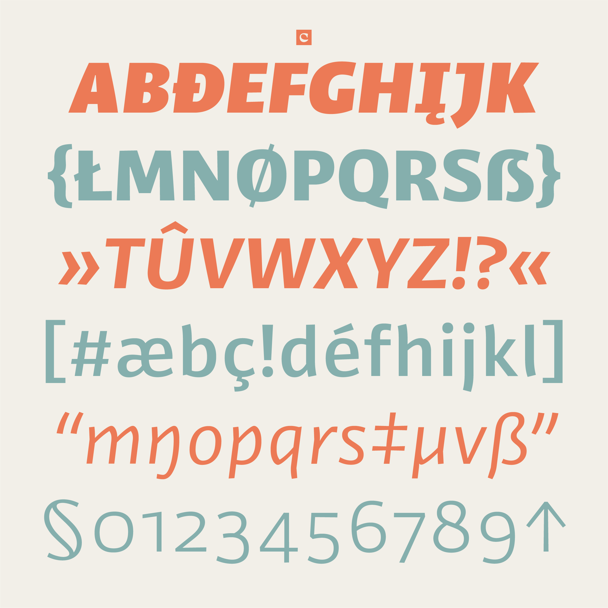

Fizz
2020 • branding typeface
A collaboration with Alexander Branczyk and based on his iconic superfamily of typefaces for the FEZ Berlin, Fizz aims to be a running-text counterpart for extended use on screen and in print. The family represents the symbiosis of the outgoing shapes of its sibling, paired with the restraint of a highly functional text family. It is equipped with a vast character set, extensively covering both Latin and Cyrillic. The generous weight range up to Black enables Fizz to be used as well in display settings, aided by its spirited true italic companion.
Fizz Slab compliments the sans-serif styles for an even wider typographic range, with a semi-mono companion to round things off.
Fizz was featured in the 2022 edition of the Yearbook of Type.
